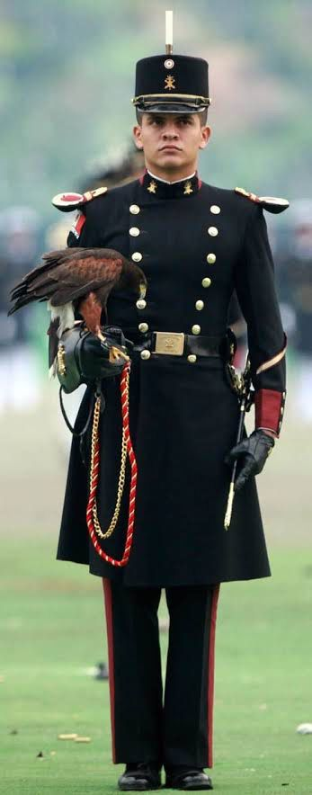

NEGOCIO
DEPORTE
FAVORITO
CARRERA
UNIVERSITARIA
EN
MI
COMUNIDAD
|
MI CARRERA UNIVERSITARIA | |||||||||
|
EL HEROICO COLEGIO MILITAR |
Ami le gustaria portar el uniforme algun día |

| |
|
y bueno no solo tiene el heroico |

|
Realizar en forma permanente actividades de | |

|
DIRECCIÓN |
al entrar al colgio militar tendre que |

|